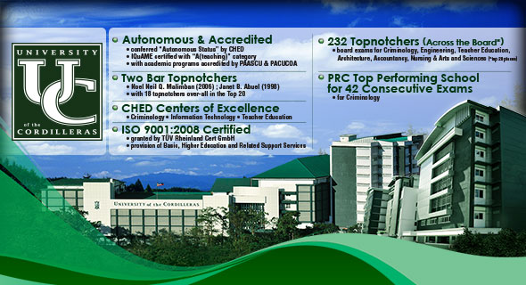

The History of the University of the Cordilleras
Baguio Colleges, as the University of the Cordilleras was earlier known, pioneered in tertiary education in the mountain highlands of the Cordillera region amidst devastation in and around Baguio City after the Second World War.
Despite a pessimistic outlook and the bleak prospects pervading the climate of any undertaking at that time, Atty. Benjamin R. Salvosa envisioned Baguio City as a university town. With such vision, he undauntedly pursued a noble mission by founding a college.It was on June 19, 1946, coinciding with the birth anniversary of Dr. Jose P. Rizal, that a historic event unfolded. Baguio Colleges was established initially offering courses in teacher training and liberal arts, with the first batch of enrollees consisting of 156 students. Classes were first held in rented spaces at the Antipolo building, and later, at the Lopez and Lamping buildings along Session Road, the city's main thoroughfare.
1966 became a turning point for Baguio Colleges as it was converted into an educational foundation. Since then, it has blazed new trails and has become more responsive to the needs of the time.
The founder, Atty. Benjamin R. Salvosa sat as the Chairman of the Board of Trustees and held the reins of the presidency up to the early part of 1994.
Through the years, the University of the Cordilleras has grown bigger through the offering of additional courses and increasing student enrollment. It continues to grow even better with time, as evidenced by exemplary performance in various fields of discipline, with its graduates shining in national licensure examinations, and its alumni doing well in private employment, in the practice of their trade and profession, and in public service.
Today, the University of the Cordilleras caters to more than 15,000 students coming from the Cordillera Administrative Region (CAR), Regions I and II, as well as from neighboring provinces in Luzon. Course offerings range from graduate studies, law, arts and sciences, nursing, engineering and architecture, commerce and secretarial, teacher education, computer science, technical courses, elementary and high school.

Hold high the torch;
Let its blaze reach all corners,
Throughout the world
to lighten the course of darkness.
Keep wise and well not forgetting fidelity,
To our Alma Mater, wherever we may be
Keep our hearts together with glowing
love and loyalty.
Hold tight the shield,
And defend our dear country
We must not yield
To threats made upon our safety.
This is the pledge
We shall keep till our dying day.
To our Alma Mater, wherever we may be
Keep our hearts together
With glowing love and loyalty.
VISION-The University of the Cordilleras Libraries envisions itself as an innovative resource center that facilitates the acquisition of knowledge and lifelong learning in the community.
MISSION-The UC Libraries mission is to support the teaching, learning, research and community extension programs of the university through provision of comprehensive information resources and customer-focused services.
